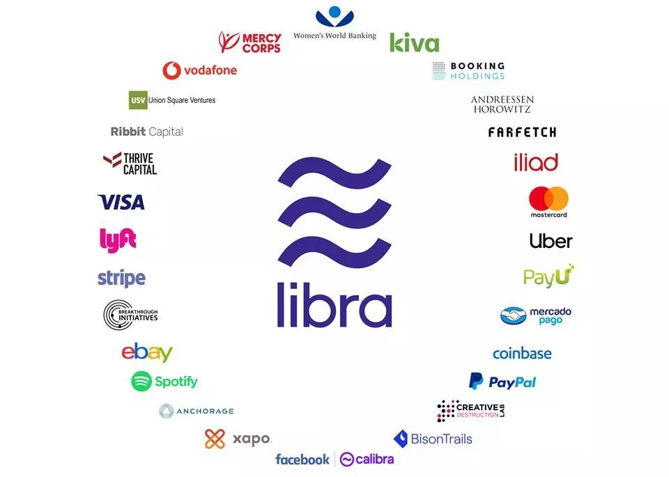
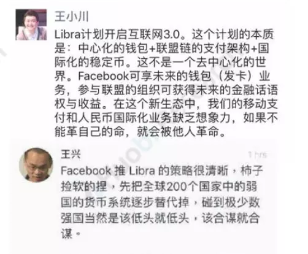

- 00 开篇词 怎样成长为优秀的软件架构师？.md.html
- 01 架构设计的宏观视角.md.html
- 02 大厦基石：无生有，有生万物.md.html
- 03 汇编：编程语言的诞生.md.html
- 04 编程语言的进化.md.html
- 05 思考题解读：如何实现可自我迭代的计算机？.md.html
- 06 操作系统进场.md.html
- 07 软件运行机制及内存管理.md.html
- 08 操作系统内核与编程接口.md.html
- 09 外存管理与文件系统.md.html
- 10 输入和输出设备：交互的演进.md.html
- 11 多任务：进程、线程与协程.md.html
- 12 进程内协同：同步、互斥与通讯.md.html
- 13 进程间的同步互斥、资源共享与通讯.md.html
- 14 IP 网络：连接世界的桥梁.md.html
- 15 可编程的互联网世界.md.html
- 16 安全管理：数字世界的守护.md.html
- 17 架构：需求分析 (上).md.html
- 18 架构：需求分析 (下) · 实战案例.md.html
- 19 基础平台篇：回顾与总结.md.html
- 20 桌面开发的宏观视角.md.html
- 21 图形界面程序的框架.md.html
- 22 桌面程序的架构建议.md.html
- 23 Web开发：浏览器、小程序与PWA.md.html
- 24 跨平台与 Web 开发的建议.md.html
- 25 桌面开发的未来.md.html
- 26 实战（一）：怎么设计一个“画图”程序？.md.html
- 27 实战（二）：怎么设计一个“画图”程序？.md.html
- 28 实战（三）：怎么设计一个“画图”程序？.md.html
- 29 实战（四）：怎么设计一个“画图”程序？.md.html
- 30 实战（五）：怎么设计一个“画图”程序？.md.html
- 31 辅助界面元素的架构设计.md.html
- 32 架构：系统的概要设计.md.html
- 33 桌面开发篇：回顾与总结.md.html
- 34 服务端开发的宏观视角.md.html
- 35 流量调度与负载均衡.md.html
- 36 业务状态与存储中间件.md.html
- 37 键值存储与数据库.md.html
- 38 文件系统与对象存储.md.html
- 39 存储与缓存.md.html
- 40 服务端的业务架构建议.md.html
- 41 实战（一）：“画图”程序后端实战.md.html
- 42 实战（二）：“画图”程序后端实战.md.html
- 43 实战（三）：“画图”程序后端实战.md.html
- 44 实战（四）：“画图”程序后端实战.md.html
- 45 架构：怎么做详细设计？.md.html
- 46 服务端开发篇：回顾与总结.md.html
- 47 服务治理的宏观视角.md.html
- 48 事务与工程：什么是工程师思维？.md.html
- 49 发布、升级与版本管理.md.html
- 50 日志、监控与报警.md.html
- 51 故障域与故障预案.md.html
- 52 故障排查与根因分析.md.html
- 53 过载保护与容量规划.md.html
- 54 业务的可支持性与持续运营.md.html
- 55 云计算、容器革命与服务端的未来.md.html
- 56 服务治理篇：回顾与总结.md.html
- 57 心性：架构师的修炼之道.md.html
- 58 如何判断架构设计的优劣？.md.html
- 59 少谈点框架，多谈点业务.md.html
- 60 架构分解：边界，不断重新审视边界.md.html
- 61 全局性功能的架构设计.md.html
- 62 重新认识开闭原则 (OCP).md.html
- 63 接口设计的准则.md.html
- 64 不断完善的架构范式.md.html
- 65 架构范式：文本处理.md.html
- 66 架构老化与重构.md.html
- 67 架构思维篇：回顾与总结.md.html
- 68 软件工程的宏观视角.md.html
- 69 团队的共识管理.md.html
- 70 怎么写设计文档？.md.html
- 71 如何阅读别人的代码？.md.html
- 72 发布单元与版本管理.md.html
- 73 软件质量管理：单元测试、持续构建与发布.md.html
- 74 开源、云服务与外包管理.md.html
- 75 软件版本迭代的规划.md.html
- 76 软件工程的未来.md.html
- 77 软件工程篇：回顾与总结.md.html
- 加餐 如何做HTTP服务的测试？.md.html
- 加餐 实战：“画图程序” 的整体架构.md.html
- 加餐 怎么保障发布的效率与质量？.md.html
- 热点观察 我看Facebook发币（上）：区块链、比特币与Libra币.md.html
- 热点观察 我看Facebook发币（下）：深入浅出理解 Libra 币.md.html
- 用户故事 站在更高的视角看架构.md.html
- 答疑解惑 想当架构师，我需要成为“全才”吗？.md.html
- 结束语 放下技术人的身段，用极限思维提升架构能力.md.html
- 课外阅读 从《孙子兵法》看底层的自然法则.md.html
- 捐赠
热点观察 我看Facebook发币（下）：深入浅出理解 Libra 币
你好，我是七牛云许式伟。今天我们接着聊由 Facebook 推动的 Libra 币。
听到一个陌生概念后，人们往往习惯于把它和自己熟悉的东西做一个类比，方便和他人沟通的时候，用以表达自己的理解。
那么，和 Libra 最像的东西是什么呢？
货币储备
有人说，Libra 不就是腾讯的 Q 币么？但是，这种理解仅仅停留在非常表面的层次。两者共同之处，仅仅是因为两者都是一种虚拟币（甚至不能说它们都是数字货币，因为 Q 币是不能称之为数字货币的）。
首先，Q 币可以用货币购买，但是没法反向兑换现金。最关键的是，腾讯可以自由发行 Q 币，它说有多少就可以有多少，不需要被监管。所以如果 Q 币可以以稳定的价格兑换现金的话，相当于腾讯可以自由印钞票，这显然不会被政府所允许。
但是 Libra 并不是这样。Libra 可以自由兑换，另外 Facebook 也不能够自由发行 Libra 币。发行新的 Libra 币时，有两大核心约束。
其一，发行新的 Libra 币需要保值的资产做为抵押，我们称之为 “Libra 储备”。 什么样的资产可以作为 Libra 储备？被 Libra 协会认可的，稳定且信誉良好的中央银行发行的货币，或者政府货币证券。也就是说，Libra 币锚定的是它认可的“一篮子货币”，而不是某一种货币。
其二，由 Libra 协会来发行或销毁 Libra 币。 目前 Libra 协会执行这个动作完全是被动的。Libra 生态中，会有一些被授权的经销商，他们负责 Libra 币的买卖。
这些授权经销商会按照一定的汇率，以某种被 Libra 协会认可的货币，向 Libra 协会买入 Libra 币。这时，这些用于买入的货币就会成为 Libra 储备。
当然授权经销商也可能卖出 Libra 币，换成他所期望的某种货币。在这种情况下，被卖出的 Libra 币就会被销毁，相应地， Libra 储备就会减少。
所以你可以看到，Libra 并没有自己的货币政策，总共有多少 Libra 币完全是由市场的供需决定的。
关于货币储备更详细的内容，请参阅 “Libra 储备”。
稳定币
既然 Libra 不像 Q 币，那么它像什么？比特币吗？
相比 Q 币来说，Libra 与比特币的确更有比较意义，毕竟它们都是一种数字货币。但是我们在 “我看Facebook发币（上）：区块链、比特币与 Libra 币” 中，也已经谈到过两者一些根本上的不同。
如果我们忽略所有的技术细节，单从货币角度来看，比特币和 Libra 最大的区别是价格的波动性。
通过上面我们对 “Libra 储备” 的介绍，我们很容易知道 Libra 是一种稳定币，它看起来更像是由一些保值资产抵押所形成的 “债券”。而在币圈，大家可能都经常会听到一个词，叫做 “炒币”。
如果我们细想一下这背后的逻辑，就会知道这个词其实挺神奇的。
货币的核心价值是什么？
货币的价值显然不是增值，而是流通。而流通用的货币，最重要的是价格稳定。而币圈则不同，这些各式各样存在的币，现在它们的核心价值变成了 “炒”，这就完全被扭曲了。
我这么说当然不是认为比特币不好。只不过如果我们真的对比特币好，就应该把关注点放在比特币流通价值的构建上；而不是“喜看币涨”，涨了就奔走相告。
世界货币
那么，究竟 Libra 最像什么呢？
我个人认为，虽然目前的实现机制有所不同，但是 Libra 最像的是欧元。欧元的出现，对欧盟国家之间的自由贸易往来发挥了巨大的贡献。
欧元和 Libra 的初衷是一样的，都是为了构建跨国的自由经济贸易体系。两者不同之处在于，当前 Libra 还没有央行，不能凭空去发行货币。
凡事都有两面，“世界货币” 同样是有缺陷的。欧债危机导致欧元贬值，这个教训大家还记忆犹新。它告诉我们，一个国家经济出现问题，如果它采用的是独立的主权货币，那么只是导致本国的货币贬值。
但是 “世界货币” 意味着大锅饭，它会传导到整个经济体，连带整个经济体的货币贬值。
那么 Libra 会出现自己的央行么？短期当然不会，当前最重要的是流通，是地盘的扩张。但是长远看只要 Libra 成功了，就一定会有。毕竟，没有 Libra 央行，就没有机会解决 “大锅饭” 的问题。
所以站在更长远的未来看，今天的 Libra 协会，有可能就会是未来的 “Libra 央行”。
Libra 协会
Libra 协会总部位于瑞士日内瓦，协会成员包括分布在不同地理区域的各种企业、非营利组织、多边组织和学术机构。初始协会成员共有28家（如下图），未来计划达到100家。
- 加入 Libra 协会，需要支付不低于 1000 万美元来购买 Libra 投资代币，注意，它并不能简单理解为 Libra 币，两者有很大不同，它有很多特殊的权益。
其一，整个 “Libra 储备” 的处置权。 比如， Libra 储备到底放在哪里会比较安全靠谱？这是由Libra 协会决定的。但是每个成员是不是都是一票？并不是，票数是由这个成员持有的 Libra 投资代币数量决定的。具体规则，我在下面会讨论。
其二，整个 “Libra 储备” 的利息，会被用来支撑 Libra 协会的日常运转。 比如工资和奖金激励，也会用于派发分红。分红会按照持有的 Libra 投资代币的多少来分配。
其三，各类事务决策的投票权。 权重按持有的 Libra 投资代币来计算，每 1000 万美元有 1 个投票权，但是为了防止投票权过于集中，任何成员的投票权不能超过总票数的 1%。
超出部分的投票权将由 Libra 协会的董事会重新分配，比如授予具有社会影响力的合作伙伴（称为 SIP）或研究机构，前提是：他们有能力并致力于验证节点的运作，从而参与治理，并且确实无法作出最低 1000 万美元的投资。
其四，运行验证节点。 这一点可以被看作义务，但也可以看作权益。义务角度来说，显然这事是需要 IT 成本的，如果连这都做不到，就会被剔除出去。从权益角度来说，那么多的交易数据都被你拿到了，这是多么有价值的数据。
关于 Libra 协会储备更详细的内容，请参阅 “Libra 协会”。
发展目标
当前 Libra 的验证节点是有限制的，是许可型的，也就是所谓的 “联盟链”。但是，未来它会向非许可型治理和共识节点运营转变，降低参与的准入门槛，并减少对创始人的依赖。
Libra 将逐步进行网络的开放，变成所谓的 “公链”。这时，新成员也能够通过投资 1000万美元来自动获得验证节点的运行许可，并持有 Libra 投资代币，从而分享网络权益（但是我估计投票权之类是没有的，只有投资收益）。这部分的详细政策，或许未来才会逐步明朗。
Libra 协会致力于尽可能减少协会的干预权。比如完全通过市场机制来调节 Libra 币的供需。所以除了说服更多人加入 Libra 协会，协会最重要的工作是确定 Libra 的技术演进路线。
但这一点真实情况下显然并不会那么理想。货币互联网和互联网不同的是，它管的毕竟是钱。一旦 Libra 网络发展壮大，一些货币相关的治理问题就会暴露出来。
降维打击
Libra 的影响面绝对超乎大部分人的想象。我们先看看一些具备技术背景的知名互联网公司 CEO 是怎么看的。具体参见下面的截图。

显然无论王兴还是王小川，都高度重视并反复评估 Libra 带来的影响和自己应该采取的行动。
Libra 带来的打击是全方位的，某种程度上来说甚至是极难抵御的降维打击。我们不妨从以下这些维度看。
- 弱小国家的货币主权会不会就此被取代？
- 中国的汇率管控会不会失效？就算没有失效，会不会变成闭关锁国？
- Libra 是否会成为美国取代美元的新货币霸权？
- 从企业与企业竞争的角度，这会不会成为 Facebook 对微信、支付宝的降维打击？
想完影响面想对策。从对策的角度来说无非两种，一是对抗，一是谋求对等权力下的协作。当然，这两条路都不会太容易。
结语
今天，我们从分析 Libra 的运行机制重新去理解 Libra 币。这里面的关键是：理解 Libra 协会究竟如何工作的。
我们没有分析 Libra 的技术细节，比如它怎么改变区块链的底层实现机制，又为什么要引入 Move 语言。如王兴所说，评判 Libra 的实现技术好不好，就好比评价美元钞票的印刷技术精细不精细。这事本身是有价值的，但不那么关键。
为什么我会写这两篇文章？
站在未来看现在，Libra 币将会是极其重大的一个历史节点。我倾向于这样来描绘它的影响：
计算机 => 互联网 => Libra 币
货币有着巨大的网络效应，留给后来者的时间窗口极短。我想，我们都应该思考怎么去面对这件事情了。
© 2019 - 2023 Liangliang Lee. Powered by gin and hexo-theme-book.